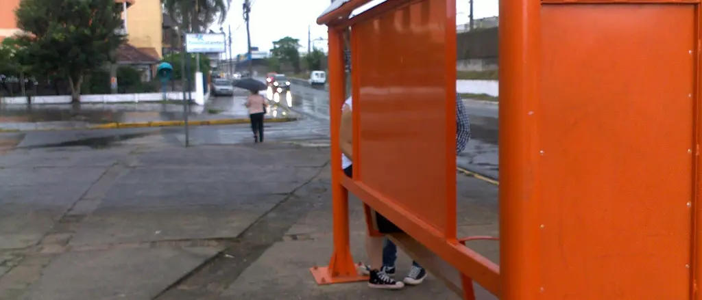

O que está quebrado na sua rua, contado em dias.
Vizinhos registram com foto. Todo dia, a lista vai para a Prefeitura. Um relógio público conta os dias até quem mora ali confirmar o conserto.
Não é um canal da Prefeitura Código aberto
Como vai funcionar, do celular ao conserto.
O mapa abre bairro por bairro. Estes são os quatro passos de cada registro, com um exemplo do começo ao fim.
Uma foto, o tipo de problema, o lugar.
Registrar leva menos de um minuto. Em público, você aparece só com um apelido e o seu bairro. Rostos e placas são borrados, e os dados escondidos da foto, como o GPS do celular, são apagados.
Dez tipos de problema na estreia, cada um ligado ao órgão responsável.
Foto anexadaRostos e placas serão borrados ao publicar.
Tipo de problema
NiteróiArraste o pino até o ponto exato. A rua aparece; o seu endereço, nunca.
Todo dia, a lista vai para a Prefeitura.
Às 18h, o Fala, Canoas manda à Ouvidoria-Geral do Município um resumo com os registros novos do dia, em nome do projeto. O relógio de cada registro começa nesse envio, e a hora fica pública.
Quando a fila de inscritos crescer, a Prefeitura será convidada a responder por uma conta verificada.
Resumo de 30 de agosto: 23 registros novos
- 17:42Rua que alaga toda chuvaNiterói
- 16:05Poste apagadoGuajuviras
- 14:31Boca de lobo entupidaMathias Velho
- 11:18Buraco na ruaEstância Velha
- 09:56EntulhoHarmonia
- +18outros, com foto, lugar e link
O relógio conta em público.
Cada registro mostra há quantos dias está aberto, quando foi enviado e quantos vizinhos também viram. Ninguém precisa reclamar de novo: um toque em “também vi” soma à mesma contagem.
Antes de registrar, o mapa mostra problemas parecidos a poucos metros, para não duplicar.
Parada de ônibus vira poça a cada chuva
em aberto
Só fecha quando os vizinhos confirmam.
A Prefeitura pode responder “resolvido”. O registro só fecha quando quem registrou ou dois vizinhos confirmam, de preferência com uma foto do depois. Se ninguém contestar em 15 dias, fecha sozinho.
- 12 outPrefeitura respondeu “resolvido”conta verificada
- 13 outgarça-do-sinos confirmou, com foto
- —Falta mais 1 vizinho, ou 15 dias sem contestação
- —Fechado. Entra no placar.
O placar mede órgãos, nunca pessoas.
Três leituras, atualizadas todo dia: quanto cada tipo de problema demora, quanto cada órgão leva do envio ao conserto confirmado e onde os problemas se acumulam. Sempre a mediana, e só com pelo menos 20 registros nos últimos seis meses.
| Tipo | Mediana até o conserto | Dias | Resolvidos em 30 dias |
|---|---|---|---|
| Poste apagado | 12 | 78% | |
| Sinalização e semáforo | 16 | 70% | |
| Lixo e descarte irregular | 19 | 64% | |
| Boca de lobo entupida | 27 | 52% | |
| Árvore: poda ou risco | 34 | 41% | |
| Buraco na rua | 41 | 33% | |
| Rua que alaga toda chuva | 58 | 18% |
| Órgão responsável | Tipos de problema | Mediana |
|---|---|---|
| Secretaria de Obras e Reconstrução | Buraco, alagamento, boca de lobo | — |
| Secretaria de Serviços e Zeladoria Urbana | Lixo, entulho, árvores | — |
| Iluminação pública | Poste apagado | — |
| Secretaria de Mobilidade Urbana | Sinalização e semáforo | — |
| Bairro | Na fila | Para abrir |
|---|---|---|
| Centro | 0 | 52 |
| Estância Velha | 0 | 102 |
| Fátima | 0 | 65 |
| Guajuviras | 0 | 136 |
| Harmonia | 0 | 116 |
| Igara | 0 | 67 |
| Marechal Rondon | 0 | 51 |
| Mathias Velho | 0 | 144 |
| Mato Grande | 0 | 55 |
| Niterói | 0 | 110 |
| Nossa Senhora das Graças | 0 | 49 |
| Olaria | 0 | 53 |
| Rio Branco | 0 | 95 |
| São José | 0 | 61 |
| São Luís | 0 | 25 |
| Brigadeira | 0 | com o 1º bairro |
| Ilha das Garças | 0 | com o 1º bairro |
| Industrial | 0 | com o 1º bairro |

Uma parada de ônibus em Canoas, num dia de chuva. Problemas assim existem em todo bairro. A diferença é ter data, lugar e alguém contando.
Foto: Nilce Bravo (Bravotata), Wikimedia Commons, CC BY-SA 3.0, recortadaOs números da própria Ouvidoria.
A Ouvidoria-Geral do Município publica relatórios todo ano. Eles mostram um canal pouco usado e, no ano da enchente, prazos difíceis de cumprir.
Manifestações em 2024, por canal total 2.772
Até 20 de dezembro de 2024. Fonte: Relatório Anual da Ouvidoria 2024.1
Período da enchente, 6 mai a 6 dez 2024 1.783 manifestações
- Respondidas em até 30 dias53,7%
- Respondidas fora do prazo26,1%
- Em aberto e atrasadas12,4%
- Em aberto, no prazo7,8%
30 dias é o prazo da lei para responder uma manifestação, prorrogável uma vez por mais 30.3
Situação na data do relatório. Fonte: Relatório Anual da Ouvidoria 2024, anexo.1
Fala, Canoas não substitui a Ouvidoria. Soma a ela um registro público, por bairro, que qualquer pessoa pode conferir.
O que não entra no mapa.
O mapa é para serviços públicos. O resto tem outro lugar.
- Crimes e violência
- Para isso existem a polícia e o 190. Ninguém precisa se expor num mapa público.
- Reclamação contra uma pessoa
- O mapa aponta serviços e órgãos, nunca alguém pelo nome: nem servidor, nem motorista, nem vizinho.
- Briga entre vizinhos
- Barulho, obra do lado, cachorro do vizinho: não são serviço público.
- Emergência
- Fala, Canoas não é canal de emergência. Defesa Civil: 199. Bombeiros: 193. Alagamento que volta toda chuva, sim, entra.
Independente, e dá para conferir.
Não basta dizer. Estas são as regras do próprio projeto.
- Não é da Prefeitura
- Nenhum vínculo com a Prefeitura de Canoas nem com qualquer órgão público.
- Sem dinheiro político
- Não aceitamos dinheiro de governos, partidos ou candidatos. Por enquanto, os custos são pagos pelo fundador.
- Código aberto
- Licença AGPL-3.0. O código vai ficar público em github.com/falacanoas, para qualquer pessoa ler, copiar e melhorar.
- Dados abertos
- Quando o mapa abrir, os registros e o placar poderão ser baixados por qualquer pessoa, sem nenhum dado de quem registrou.
- Uma pessoa responde
- Pedro Seibel é o responsável pelo projeto e pelos dados da fila. Voluntários são bem-vindos.
| Dado | Para quê |
|---|---|
| Bairro | Contar a fila do seu bairro. |
| WhatsApp ou e-mail | Avisar quando seu bairro abrir. Mais nada. |
| Como pode ajudar | Opcional. Organizar quem quer moderar, programar ou divulgar. |
Cada bairro abre quando a fila enche.
Cerca de 1 inscrito para cada 300 moradores, com mínimo de 25.4 Industrial, Brigadeira e Ilha das Garças, que têm poucos moradores, abrem junto com o primeiro bairro que encher.
Só contam inscrições confirmadas pelo WhatsApp ou pelo link do e-mail.
Coloque seu bairro na fila.
Quando a fila do seu bairro encher, você recebe um aviso e o mapa abre ali. Até lá, nenhuma outra mensagem.
Cada bairro abre quando a fila enche.
Falta um passo: confirmar.
Confirmar no WhatsAppEsta página ainda está em pré-visualização: a inscrição não foi gravada em lugar nenhum.